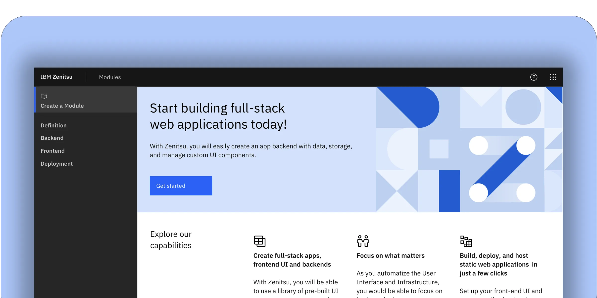
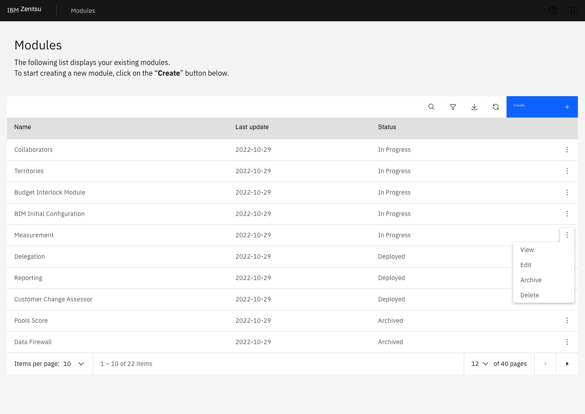

Zenitsu — Usability Testing for an Internal Developer Platform
Zenitsu streamlined how teams generated, configured, and deployed modular web apps at Sales Systems. This case study focuses on late-stage usability testing and how the findings shaped the next iteration.

Overview
Zenitsu was an internal platform built to reduce the overhead of creating and deploying scalable web applications at IBM Sales Systems. The platform standardized a four-component workflow — a core generator, shared libraries, a configuration UI, and a DevOps pipeline — serving over 200 developers and product owners across 12 global sales teams. By automating module setup and deployment, Zenitsu aimed to cut avoidable errors, shorten time-to-ship, and make ownership traceable across teams operating in different time zones.
Users
The platform served a cross-functional internal audience: developers who built and maintained modules, product owners who defined requirements and tracked deployments, administrators who managed environments and access, and analyst/support roles who depended on stable, predictable structures to troubleshoot issues. Following IBM Design Thinking methodology, we identified and worked closely with Sponsor Users — real representatives from each role group — who participated in recurring feedback sessions throughout the project. Their input shaped both the personas and the scenarios used in usability testing.
{kind=link}
{kind=link}
What I Led
I led the UI design and interaction layer, aligning patterns with Carbon Design System v10. My responsibility extended beyond screens: I defined component usage guidelines, maintained design-to-dev handoff documentation in Sketch with annotated specs, and ran design QA sessions with engineers during implementation to verify that Carbon tokens — color, spacing, and type — were applied consistently across modules. The goal was to ensure the UI made complex configuration feel clear, predictable, and safe, particularly in the steps where users defined schemas, assigned roles, and selected deployment environments.
One deliberate tradeoff I advocated for: keeping the creation flow as a strict linear sequence (Definition → Backend → Frontend → Deployment) rather than a free-form multi-tab editor. Engineering preferred tabs for flexibility. I pushed back — user interviews showed that non-linear entry caused data loss and misconfiguration. The sequential approach added one extra click per session but eliminated an entire category of error we were seeing in the As-Is experience.
Why Usability Testing
This case study focuses on late-stage validation — after wireframing and early discovery, right before development handoff. At this stage, IBM Design Thinking calls for a Playback: a structured session where the team presents the current design to stakeholders and Sponsor Users to validate direction and surface gaps. We extended this into a formal usability test to get measurable, comparable data before committing to build.
Hills
Following IBM Design Thinking, we framed our testing goals as Hills — outcome-oriented statements that describe what a user should be able to accomplish, not what the system should do:
- A developer can create and deploy a new module without needing to contact the support team.
- A product owner can review module status and understand what action is needed in under two minutes.
- A new user can complete their first deployment with no prior documentation.
Method
We ran moderated sessions with 7 participants using a think-aloud protocol. Participants spanned both Sponsor User groups — developers and product owners — and completed key flows while describing their expectations, interpretation of terminology, and decision points. Sessions were observed by the broader squad including engineers and the product manager, reinforcing a shared understanding of user behavior across the team. After task completion, we administered UMUX — a lightweight usability metric developed as a shorter alternative to SUS, validated for iterative evaluation cycles.
{kind=link}
{kind=link}
Prototype Coverage
Because the UI was built on Carbon Design System v10 — with established components, tokens, and interaction patterns — we reached high fidelity quickly without building custom UI. This let sessions focus entirely on comprehension, task flow, and decision-making clarity rather than novelty or aesthetics.
{kind=link}
{kind=link}
{kind=link}
Key Screens Tested
- Module list: discover, manage, and understand the status of owned modules.
- Create new module: guided 4-step flow to define endpoints, configure schema, set UI choices, and deploy.
- Status & deployment: confirm environment selection and interpret deployment outcomes.
{kind=link}

Create Module — Flow Breakdown
The creation flow was structured as a strict sequence to reduce errors and help users confirm intent at each step — a deliberate architectural decision backed by research rather than engineering convenience.
- Step 1 — Definition: module name, endpoint, and initial metadata.
- Step 2 — Backend: schema and data modeling using both a visual editor and a schema view.
- Step 3 — Frontend: UI configuration using Carbon-based components, with live preview.
- Step 4 — Deployment: environment selection with explicit descriptions of each option's consequences.
{kind=link}
{kind=link}
{kind=link}
{kind=link}
Results
A score of 64 confirmed the platform was functional but not yet frictionless. The squad used this data in the next Playback with stakeholders to justify a focused iteration sprint — prioritizing the Backend and Deployment steps where confidence dropped most consistently. The score also established a measurable baseline: future iterations would be tested against it.
Beyond the score, sessions revealed repeatable breakdowns — moments where users across different roles paused, re-read, or needed reassurance before proceeding. These weren't isolated edge cases; they pointed to systemic gaps in terminology, feedback signals, and role clarity.
Key Findings
- Homepage overload: users scanned components irrelevant to their current task. Removing low-value elements reduced entry friction and shortened time-to-first-action.
- Tooltip misuse: tooltips were compensating for unclear labeling. The fix was clearer copy at the source, not more tooltips layered on top.
- One-size onboarding failed: experienced users felt patronized by mandatory guidance; new users needed more of it. Progressive disclosure — adapting guidance to user proficiency — was the solution.
- Role & permissions confusion: backend misconfiguration happened because role boundaries weren't surfaced at the decision point. Users didn't know what they were authorizing.
- Schema Editor ambiguity: users didn't know the editor's limits until they hit them. Explicit capability framing at entry would prevent dead ends and support calls.
- Icon inconsistency in Frontend step: the same action was represented differently across contexts, breaking the mental model users had built in earlier steps.
- Deployment options unclear: environment labels (staging, production) weren't described in terms of consequences — only names. Users guessed rather than chose deliberately.
- Status page noise: non-actionable data was surfaced prominently, creating anxiety without a path forward. Deferring it reduced cognitive load without removing functionality.
Accessibility
Carbon Design System v10 provides a strong accessibility foundation — components are built to WCAG 2.1 AA standards, with keyboard navigation, focus management, and screen reader support included by default. During design QA, I verified that our implementation preserved these properties: focus order in the 4-step flow was logical and uninterrupted, form fields had visible labels rather than placeholder-only text, and error states surfaced inline rather than as modal interruptions. For an internal platform used daily by a global workforce, accessibility wasn't a compliance checkbox — it was a baseline expectation.
What Changed After Testing
Findings were presented in a Playback with the product squad and key stakeholders. The team prioritized three categories for the next iteration sprint: reducing ambiguity in high-stakes steps (schema definition, role assignment, deployment environment), simplifying the homepage to a task-oriented entry point, and introducing proficiency-aware guidance that adapts without requiring users to configure it themselves.
The UMUX score of 64 became the baseline. The goal for the next round of testing was to reach 75 — a threshold that, based on UMUX research, correlates with users describing the system as "easy to use" rather than just "usable."
Conclusion
Zenitsu's value was in making complex, multi-step application setup feel routine and reliable for teams that couldn't afford to lose time to tooling friction. By running late-stage validation with real internal users — Sponsor Users with active stakes in the outcome — we surfaced the specific points where confidence dropped before a single line of production code was written. The result wasn't just a better prototype. It was a prioritized, evidence-based roadmap that the team could defend to stakeholders and build against with confidence.